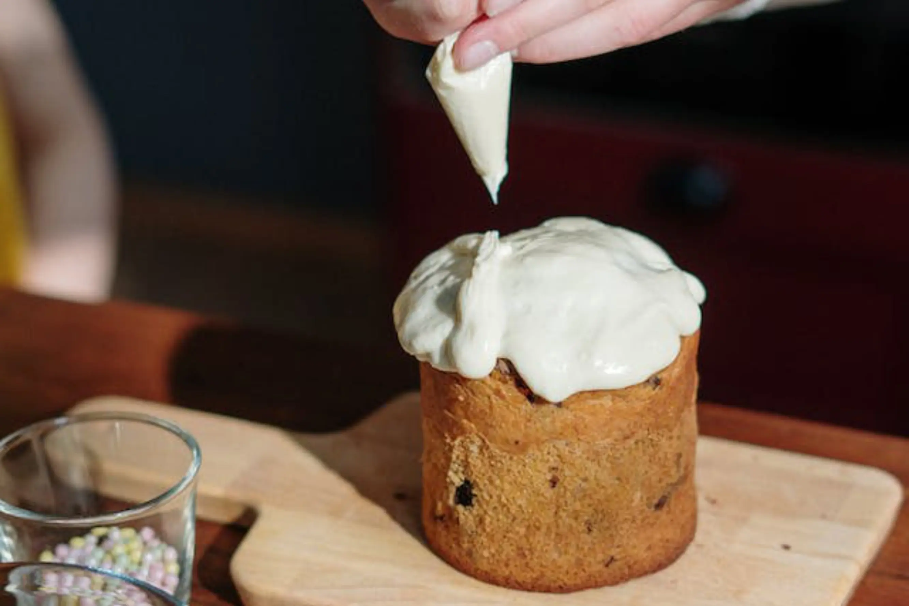

Cocino con mucho amor porque la cocina es un gran amor para mí.
Desde que tengo razón que me recuerdo divertida cocinando para brindarme a los otros con
registro, dedicación y atención.
Realizo mi trabajo con placer y gusto; despliego en él toda mi creatividad y libertad;
y lo hago con todo el amor y dedicación que tengo para ofrecer.
En mis comienzos jugaba en la cocina de mamá a "practicar"; "hacia que cocinaba". Con mi hermana juntábamos frutos y hierbas de
la naturaleza y "cocinábamos" en nuestros mundos y juegos
personales; donde hacíamos de "mamás cocineras".
Hoy la cocina es mi eje central, porque no sólo vivo de ella, sino que vivo en y para ella; rodeada
de mi hermosa familia que me ayuda y colabora para llevar adelante mi emprendimiento desde hace ya
trece años.
Trabajo sin pausas; con mucho amor, dedicación y sin dejar de adquirir los conocimientos necesarios
para actualizarme y seguir ofreciendo constantemente las últimas novedades.
Mis clientes son mi base de inspiración y mi motor para seguir creciendo
día tras día.
mis primeros pasos
en la pastelería
Si bien todo empezó en la cocina de mi infancia, degustando las riquísimas comidas de mi nonna;
mis estudios formales comenzaron en el área hotelera.
Soy administradora de hoteles y organizadora de eventos (entre otras
cosas más) y por eso... ¡tanta creatividad!
En medio de los eventos que dirigía al trabajar para las diferentes
cadenas hoteleras, gracias a las que comencé por insertarme en el mercado laboral (recién
graduada); descubrí que había algo más grande que
llamaba mi atención y latía dentro de mí: La Pastelería.
Fue así; evento, celebración, fiesta, reunión, festejo con dulces de por medio, que terminé
por
decidirme y lanzarme de lleno a mi lado artesanal y creativo; estudiando aquello por lo mi
corazón late desde hace
tiempo.
mi hogar
mi Corazón de Chocolate
Corazón de Chocolate es mi hogar, mi casa, mi refugio y
guarida.
Dulce, acojedora, divertida, creativa; a veces rebelde y algo caótica, pero siempre alegre y
presente en cada detalle para poder disfrutarse.
Hogar que brinda amor, que resuelve, crea y recrea; que hace mucho más lindos y dulces los
momentos en que hay que celebrar y agradecer.
Dulce hogar que congrega, festeja, conmemora, recuerda y añora; que siempre regala una
sonrisa y comparte lo que siente en torno a una mesa dulce como excusa de reunión familiar; que
puebla las reuniones con cálidos y golosos "te quiero"; y
que nos aglutina de forma, tanto implícita como explícita.
El núcleo de mi emprendimiento artesanal es mi propio corazón,
mi familia; el recuerdo de lo que alguna vez fue una deliciosa merienda llena de cosas
dulces; y sobre todo, llena de mucho amor en medio de un canto y una felicitación maternal,
que me impulsaban continuamente a seguir adelante.
